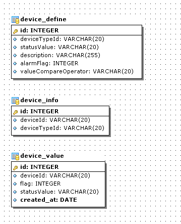
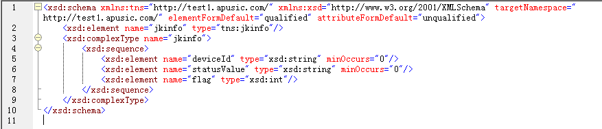
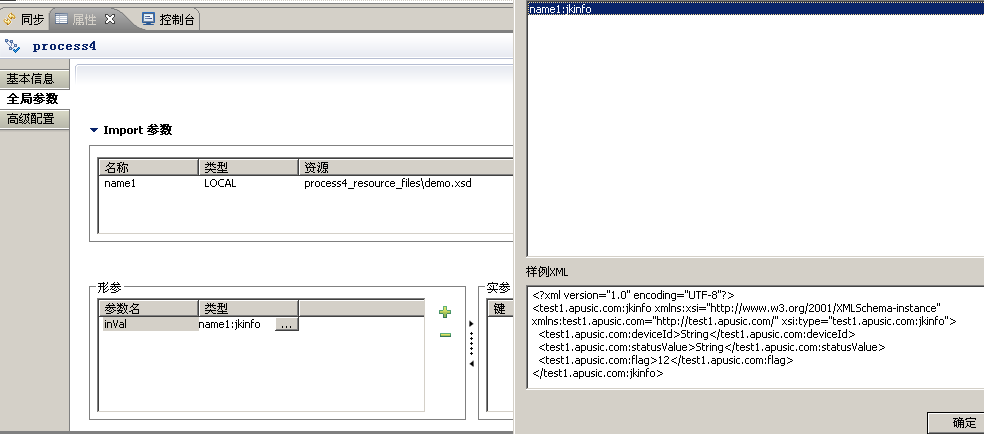
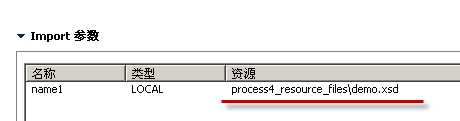
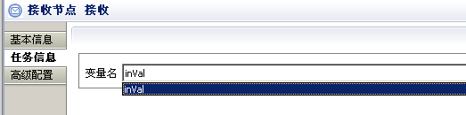
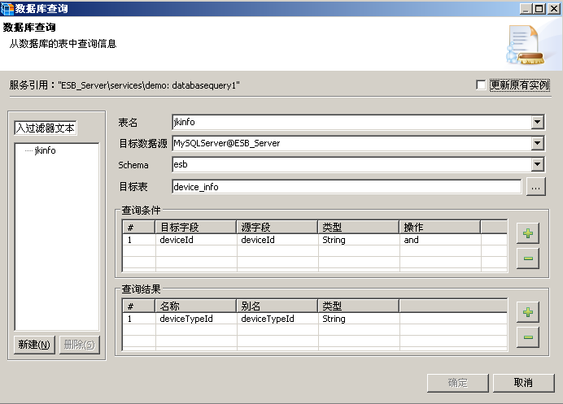
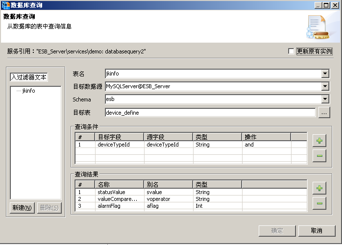
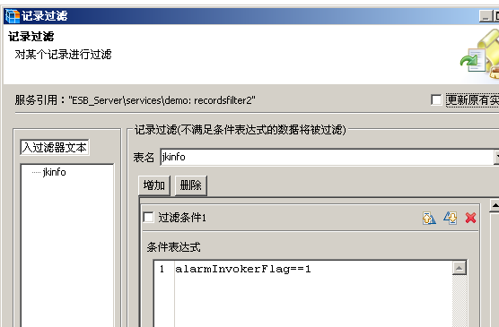
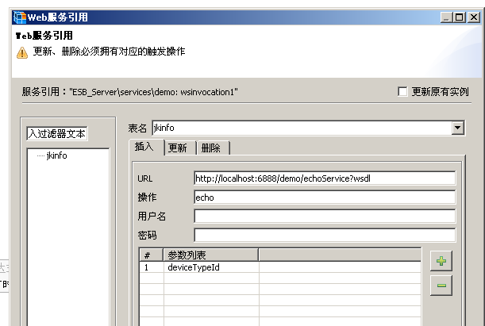

简单的说：世博馆有大量的设备，需做设备信号采集，并根据采集数据做出相关策略。
举个简单的例子：实时采集某设备温度，并且在数据库中定义当该型号设备超过100度需要报警，一旦温度超过则需触发相关请求。具体步骤如下：
请从Group上下载0814版AESB,Agent,Designer
任一数据库即可，建立如下三张表：
简单插入几条记录做测试:
insert into device_info(deviceId,deviceTypeId)values('001','101');
insert into device_info(deviceId,deviceTypeId)values('002','102');
insert into device_define(deviceTypeId,statusValue,description,alarmFlag,valueCompareOperator)values('101','35','温度',1,'>');
insert into device_define(deviceTypeId,statusValue,description,alarmFlag,valueCompareOperator)values('102','100','未知',0,'=');
点击流程空白处，选择属性，切换到《全局参数》
新增，名称随便定义，类型默认为WEB,在这里我们选择LOCAL,点击资源选择需要传入参数的xsd。根据我们上面需要交换的数据格式，简单的copy个xsd如下:
定义一个inVal，类型选择刚刚导入的xsd，确认即可。
完整配置截图如下：
Warning
注意：0814中有个小的BUG,ESB不会将你的xsd拷贝至bpm目录下，你需要根据import后出现的名称，在bpm下建同样的目录，然后将上面import的xsd拷贝进去，如
上面显示的是process4_resource_filesdemo.xsd，那么就在bpm目录下新建process4_resource_files，然后copy demo.xsd到该目录下。
选择属性，在任务信息中，选择刚刚配置的变量
同上，选择任务信息，在表达式中输入:
import java.util.ArrayList;
import com.apusic.esb.das.common.TableDataObject;
import com.apusic.esb.das.common.DataObjectWrapper;
define temp = new ArrayList();
define tdo = new TableDataObject();
tdo.setName("jkinfo");
define dow = new DataObjectWrapper("I", inVal);
tdo.addDataObjectWrapper(dow);
temp.add(tdo);
_processContext.setLocalVariable('temp', temp);
上面大体的意思就是将传入的数据封装成一个表名为jkinfo的DO.
请将这两个节点路由选择为and，保证两边度能运行
表名：因为是程序里面赋值的，所以无法在工具选择，手工输入jkinfo,即上面代码中的setName
表达式中输入获取当前时间代码:
import java.text.SimpleDateFormat;
import java.util.Date;
define created_at = (new SimpleDateFormat("yyyy-mm-dd HH:mm:ss")).format(new Date())
然后导出该变量。
删除该结点，放在这里仅仅是演示的时候告诉客户可以用这个功能。
根据传入的deviceId查询deviceTypeId
根据上面查询到的DeviceTypeId进一步查询报警信息
根据业务逻辑，如果alarmFalg为1，则计算传入 stausValue 与 查询结果中 statusValue 做operator比较，得到释放需要调用报警标志位:
define alarmInvokerFlag = 0;
if(dataObject.get("aflag")==1){
if(dataObject.get("voperator").equals(">")){
if(Integer.parseInt(dataObject.get("statusValue"))>Integer.parseInt(dataObject.get("svalue"))){
alarmInvokerFlag=1;
}
}
}
导出alarmInvokerFlag变量。
根据上面计算的alarmInvokerFlag做数据过滤，过滤掉那些不需要报警的
这里我们简单的模拟一个调用web service，并且将参数传入。
其中http://localhost:6888/demo/echoService?wsdl 为我本机跑的一个echoService，即简单的将得到的数据打印出来。完整代码如下:
package com.apusic.esb.demo;
import javax.jws.WebService;
@WebService(serviceName = "simpleService")
public class SimpleService {
public String echo(String text) {
System.out.println("Got:" + text);
return text;
}
}
发布到apusic下即可。
已经提交了代码，可从这里下载<http://apusic-esb.googlecode.com/files/demo.war>
编写如下代码:
package com.apusic.esb.demo;
import org.apache.cxf.endpoint.Client;
import org.apache.cxf.endpoint.dynamic.DynamicClientFactory;
public class ServiceTest {
final static String DEVICE_ID = "001";
final static String STATUS_VALUE = "100";
final static int FLAG = 1;
public static void main(String[] args) throws Exception {
DynamicClientFactory f = DynamicClientFactory.newInstance();
Client c = f.createClient("http://169.254.2.2:5888/services/p4_v1_0?wsdl");
c.invoke("runAndWait", String.format("<?xml version=\"1.0\" encoding=\"UTF-8\"?>\n<test1.apusic.com:jkinfo xmlns:xsi=\"http://www.w3.org/2001/XMLSchema-instance\" xmlns:test1.apusic.com=\"http://test1.apusic.com/\" xsi:type=\"test1.apusic.com:jkinfo\">\n <test1.apusic.com:deviceId>%s</test1.apusic.com:deviceId>\n <test1.apusic.com:statusValue>%s</test1.apusic.com:statusValue>\n <test1.apusic.com:flag>%s</test1.apusic.com:flag>\n</test1.apusic.com:jkinfo>", DEVICE_ID, STATUS_VALUE, FLAG));
}
}
分别测试如下状态：
FALG
非1时，仅保存数据到device_value
通过以下测试
Warning
在0814版本做以上演示中，需注意如下几点：
下载esbadmin.jar<http://apusic-esb.googlecode.com/files/esbadmin.jar>覆盖到AESB-Designereclipsepluginscom.apusic.studio.esb.admin_6.0.0目录下，不然无法正常调用注册的服务。
赋值表达式的节点设置的名称别写错了，不然是无法正常执行以后各结点的:
tdo.setName("jkinfo");
分支、合并节点请选择and
流程调用后，会发现大量这样的错误，请忽略这些，这些并非流程执行异常，应该是ESB本身的一些问题:
[apusic.com.apusic.esb.services.bpm.event.impl.ProcessRuntimeListener] ProcessDBAccessException occur in ProcessRuntimeListener com.apusic.esb.services.bpm.exception.ProcessDBAccessException: java.sql.SQLException: Serialization failure: Index: 3, Size: 3
at com.apusic.esb.services.bpm.repository.impl.HSQLDBProcessRuntimeRepository.storeProcess
[apusic.com.apusic.bda.service.receiver.impl.RecordDataReceiver] Unexcepted exception.java.lang.ClassCastException: java.util.Date cannot be cast to java.lang.String
at com.apusic.esb.transformer.string.StringToTimestampTransformer.doTransform(StringToTimestampTransformer.java:28)